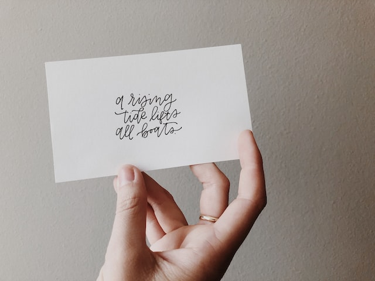
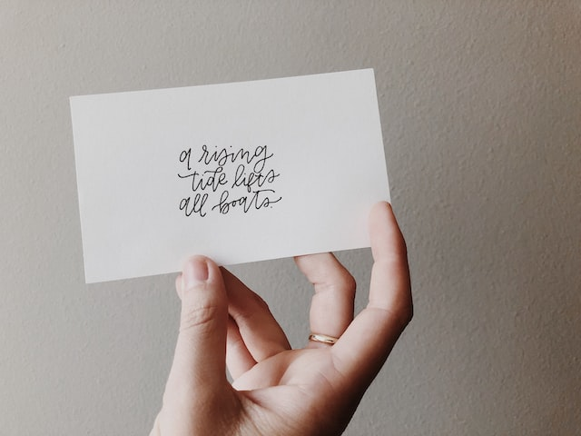

Nathalie's website
Dette er min hjemmeside, hvor jeg fremviser mine intresser.
Du kan både finde mit CV og visitkort her, samt hvilke interresser jeg har.
Hobbyer
Det er altid vigtig at have et par hobbyer, da det kan hjælpe på ens humør og glæde. Have have en interesse man kan bruge sin fritid på, kan skabe stor glæde i ens liv.
Her kan du læse om mine interesser og hobbyer, som jeg kan lide at bruge min fritid på.
Photo by Giulia Bertelli on Unsplash
CV
CV'et opsummerer ens erhvervserfaring, ens uddannelse og ens kompetencer
På denne side finder du mit CV
Photo by Jess Bailey on Unsplash
 

Visitkort
Et visitkort bruges ofte til hurtigt at udveksle kontakt informationer, som navn, telefonnummer og adresse.
På denne side finder du mit visitkort
Photo by lexie janney on Unsplash
Portfolio
Portfolio er et personligt redskab, som der kan bruges til at samle, strukturere og dele ens arbejde og refleksioner i forhold til ens læreprocesser.
På denne side finder du mit portfolie.
Photo by Brandi Redd on Unsplash